树

文章目录
什么是树
树是一种类似于链表的数据结构，不过链表的节点是以线性方式简单的指向其后继节点，而树的一个节点可以指向许多个节点。树是一种典型的 非线性 结构。
对于树ADT（抽象数据类型），元素的顺序不是考虑的重点。 如果需要用到元素的顺序信息，那么可以使用链表、队列、栈等线性数据结构 。
术语
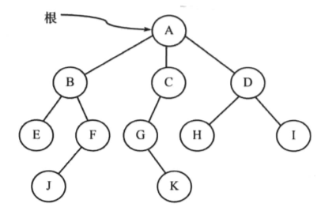
- 根节点：根节点是一个没有双亲节点的节点。 一棵树中最多有一个根节点 。（上图的A节点就是根节点）。
- 边：边表示从双亲节点到孩子节点的链接（如上图中所有的链接）。
- 叶子节点：没有孩子节点的节点叫做叶子节点（如E、J、K、H和I）。
- 兄弟节点：拥有相同双亲节点的所有孩子节点叫做兄弟节点（B、C、D彼此之间是兄弟节点）。
- 祖先节点：如果存在一条从根节点到节点q的路径，且节点p出现在这条路径上，那么就可以把节点p叫做节点q的祖先节点，节点q也叫做p的子孙节点（A、C、G是K的祖先节点）。
- 节点的大小：节点的大小是指子孙的个数， 包括其自身 （节点C的大小为3）。
- 树的层：位于相同深度的所有节点的集合叫做树的层（B、C、D具有相同的层）。 根节点位于0层 。
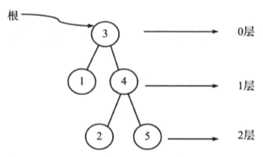
- 节点的深度：从根节点到该节点的路径长度（G点的深度为2，A-C-G）。
- 节点的高度：是指从该节点到最深节点的路径长度。 树的高度是指从根节点到树中最深节点的路径长度，只含有根节点的树的高度为0 （节点B的高度为2，B-F-J）。
- 树的高度：是树中所有节点高度的最大值，树的深度是树中所有节点深度的最大值。对于同一棵树，其深度和高度是相同的。但是对于每一个节点，其深度和高度不一定相同。
- 斜树：如果树中除了叶子节点外， 其余每个节点只有一个孩子节点 ，则这种节点称为斜树。对于每个节点只有一个左孩子节点的树称为左斜树。类似的，对于每个节点只有一个右孩子节点的树叫做右斜树。
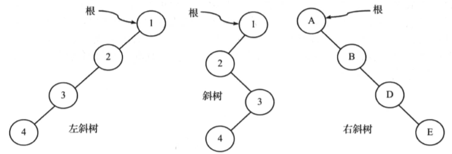
二叉树
如果一棵树中每个节点仅有0、1或者2个孩子节点，那么这棵树就称为 二叉树 。 空数也是一颗有效的二叉树 。一颗二叉树可以看做由根节点和两颗不相交的子树（分别称为左子树和右子树）组成，如下图所示：
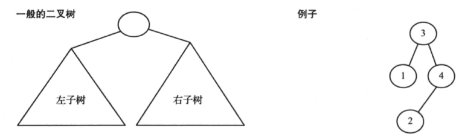
二叉树的类型
- 严格二叉树：二叉树中的每个节点要么有 两个 孩子节点，要么 没有 孩子节点。
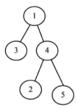
- 满二叉树：二叉树中的每个节点恰好有 两个 孩子节点且 所有的叶子节点都在同一层 。
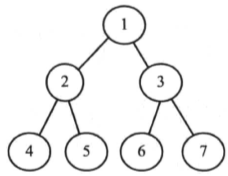
- 完全二叉树：在定义完全二叉树之前，假设二叉树的高度为h。对于完全二叉树，如果将所有节点从根节点开始从上至下、从左到右，依次编号（假定根节点的编号为1），那么将得到从1~n（n为节点总数）的完整序列。在遍历过程中对于空指针也应该赋予编号。如果所有的叶子节点的深度为h或者h-1，且在节点编号序列中没有漏掉任何数字，那么这样的二叉树称为完全二叉树。
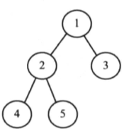
二叉树的性质
假设二叉树的高度的高度为h，且根节点的深度为0。那么二叉树的性质如下：
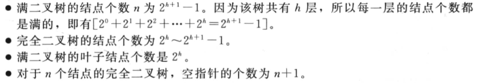
二叉树的结构
结构图示如下：
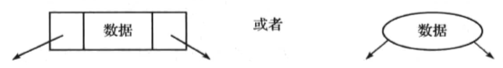
代码例子如下：
1 2 3 4 5 6 |
public class BinaryTreeNode{
private int data;
private BinaryTreeNode left;
private BinaryTreeNode right;
//getter and setter
} |
Notice： 在树中，默认的流向是从双亲节点指向孩子节点，但并不强制表示为有向边。例如，如下两种表示方式是相同的：
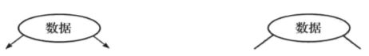
二叉树的操作
① 基本操作：
- 向树中插入一个元素。
- 从树中删除一个元素。
- 查找一个元素。
- 遍历树。
② 辅助操作：
- 获取树的大小。
- 获取树的高度。
- 获取其最大的层。
- 对于给定的两个或多个节点，找出他们的最近公共祖先（Least Common Ancestor，LCG）。
二叉树的应用
- 编译器中表达式树。
- 用于数据压缩算法中的和夫曼编码树。
- 支持在集合中查找、插入和删除，其平均时间复杂度为O(logn)的二叉搜索（或称为查找）树（BST）。
- 优先队列（PQ），它支持以对数时间（最坏情况下）对集合中的最小（或最大）数据单元进行搜索和删除。
二叉树的遍历
遍历的分类
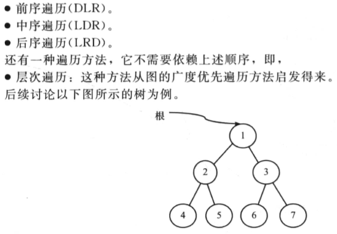
前序遍历
前序遍历一般规定先遍历左子树，然后遍历由子树。前序遍历的操作顺序如下：
- 访问根节点。
- 按照前序遍历方式遍历左子树。
- 按照前序遍历方式遍历右子树。
基于递归方式的前序遍历代码示例如下：
1 2 3 4 5 6 7 8 9 10 |
void preOrder(BinaryTreeNode root){
if(root!=null){
//先处理当前节点
System.out.println(root.getData());
//再处理左子树
preOrder(root.getLeft());
//最后处理右子树
preOrder(root.getRight());
}
} |
基于迭代方式的前序遍历代码示例如下：
1 2 3 4 5 6 7 8 9 10 11 12 13 14 15 16 17 |
void preOrder(BinaryTreeNode root){
if(root==null) return null;
Stack<BinaryTreeNode> cache=new Stack<>();
while(true){
//先从根节点开始，将所有子树的根节点从高到低添加到栈内
while(root!=null){
//首先处理根节点（前序遍历首先处理根节点）
System.out.println(root.get);
cache.push(root);
root=root.getLeft();
}
//如果栈内没有节点了
if(cache.isEmpty()) break;
//出栈，找到其右子树
root=cache.pop().getRight();
}
} |
中序遍历
中序遍历的操作顺序如下：
- 按中序遍历方式遍历左子树。
- 访问根节点。
- 按中序遍历方式遍历右子树。
基于递归方式的中序遍历代码示例如下：
1 2 3 4 5 6 7 |
void inOrder(BinaryTreeNode root){
if(root!=null){
inOrder(root.getLeft());
System.out.println(root.getData());
inOrder(root.getRight());
}
} |
基于迭代方式的代码示例如下：
1 2 3 4 5 6 7 8 9 10 11 12 13 14 |
void inOrder(BinaryTreeNode root){
if(root==null) return null;
Stack<BinaryNode> cache=new Stack<>();
while(true){
while(root!=null){
cache.push(root);
root=root.getLeft();
}
if(cache.isEmpty()) break;
root=root.pop();
System.out.println(root.getData());
root=root.getRight();
}
} |
后序遍历
后序遍历的操作顺序如下：
- 按后序遍历左子树。
- 按后序遍历右子树。
- 访问根节点。
基于递归方式的后序遍历代码示例如下：
1 2 3 4 5 6 7 |
void postOrder(BinaryTreeNode root){
if(root!=null){
postOrder(root.getLeft());
postOrder(root.getRight());
System.out.println(root.getData());
}
} |
基于迭代方式的后序遍历代码示例如下：
1 2 3 4 5 6 7 8 9 10 11 12 13 14 15 16 17 18 19 20 21 22 23 24 25 26 27 |
void postOrder(BinaryTreeNode root){
if(root==null) return null;
Stack<BinaryTreeNode> cache=new Stack<>();
while(true){
if(root!=null){
cache.push(root);
root=root.getLeft();
}else{
if(cache.isEmpty()){
return;
}else{
if(cache.peek().getRight()==null){
root=cache.pop();
System.out.println(root.getData());
if(root==cache.peek().getRight()){
System.out.println(cache.pop().getData());
}
}
if(!cache.isEmpty()){
root=cache.peek().getRight();
}else{
root=null;
}
}
}
}
} |
层次遍历
层次遍历的操作顺序如下：
- 访问根节点。
- 在访问第n层时，将n+1层的节点按顺序保存到队列中。
- 进入下一层并访问该层的所有节点。
- 重复上述操作直至所有层都访问完。
一个代码示例如下：
1 2 3 4 5 6 7 8 9 10 11 12 13 14 15 16 17 |
void levelOrder(BinaryTreeNode root){
if(root==null) return;
BinaryTreeNode temp;
Queue<BinaryTreeNode> cache=new LinkedList<>();
cache.offer(root);
while(!cache.isEmpty){
temp=cache.poll();
BinaryTreeNode left=temp.getLeft();
BinaryTreeNode right=temp.getRight();
if(left!=null){
cache.offer(left);
}
if(right!=null){
cache.offer(right);
}
}
} |
文章作者 P1n93r
上次更新 2020-03-21